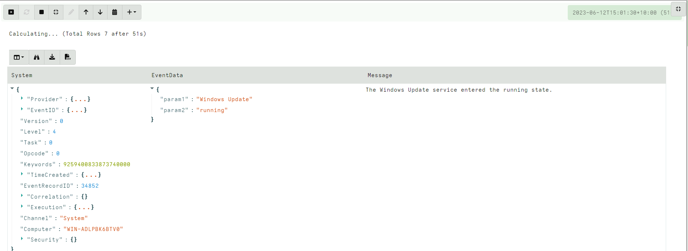

<!-- .slide: class="title" --> # Event queries and asynchronous VQL --- <!-- .slide: class="content small-font" --> ## VQL: Event Queries * Normally a VQL query returns a result set and then terminates. * However some VQL plugins can run indefinitely or for a long time. * These are called `Event VQL plugins` since they can be used to generate events. * An Event query does not complete on its own - it simply returns partial results until cancelled. --- <!-- .slide: class="content small-font" --> ## VQL: Event Queries  --- <!-- .slide: class="content small-font" --> ## Playing with event queries Selecting from `clock()` ``` SELECT * FROM clock() ```  Click the stop button to cancel the query. --- <!-- .slide: class="content small-font" --> ## Client monitoring architecture * The client maintains a set of VQL Event Queries * All run in parallel. * When any of these produce rows, the client streams them to the server which writes them to the filestore. * If the client is offline, these will be queued in the client’s local file buffer. --- <!-- .slide: class="full_screen_diagram" --> ## Client monitoring architecture  --- <!-- .slide: class="content small-font" --> ## Example event query ```sql SELECT * FROM watch_evtx(filename="C:/Windows/System32/winevt/logs/system.evtx") ``` Watch the System event log and then clear it. Wait for couple minutes. 